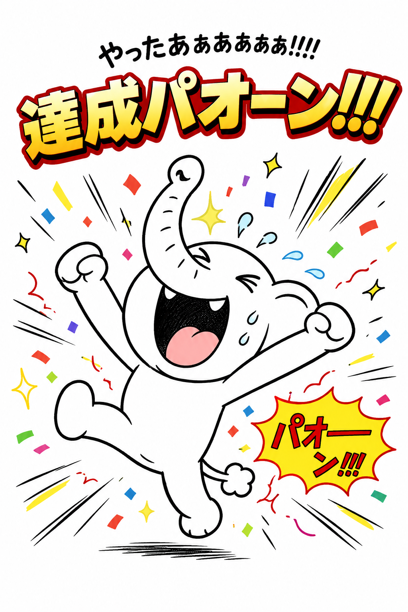
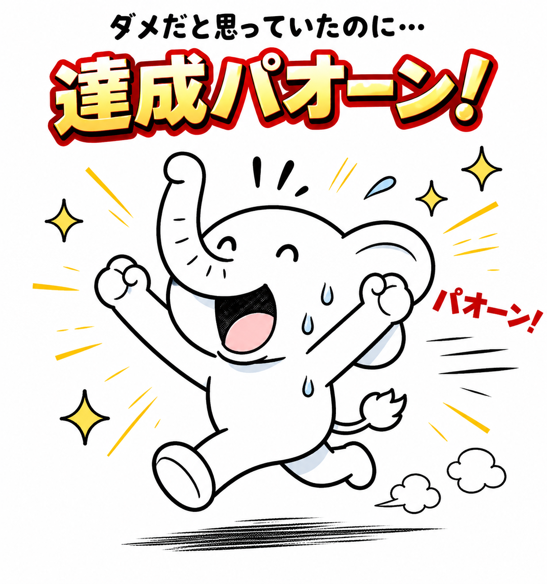

達成パオーンとは
積み重ねた行動の先にある喜び。 それが達成パオーン。
積み重ねた行動の先にある喜び。 それが達成パオーン。
達成パオーンとは、 行動の積み重ねによって得られる成果や達成感を 表現したオリジナルキャラクターです。 目標の達成。 課題の解決。 成長の実感。 その瞬間をパオーンで表現しています。
解釈設計では、 行動 → 解釈 → 修正 → 再行動 というサイクルを繰り返します。 達成パオーンは、 そのサイクルの中で生まれる結果です。 しかし達成パオーンは終点ではありません。 達成の後には、 新たな解釈と新たな行動が始まります。


・達成は突然生まれない ・小さな行動の積み重ねが大切 ・失敗も達成への材料 ・結果だけでなく成長も成果 ・達成の後も再び行動ヒヒーン
解釈設計では、 小さな達成を「小パオーン」 大きな達成を「大パオーン」 として考えます。 日々の小パオーンが積み重なり、 やがて大パオーンへとつながります。
・仕事が終わったパオーン ・ダイエット成功パオーン ・筋トレ継続パオーン ・資格合格パオーン ・フォロワー増加パオーン ・目標達成パオーン
達成は運だけでは生まれません。 行動。 継続。 修正。 その積み重ねが達成パオーンにつながります。
行動ヒヒーン → 達成の始まりとなる行動 感情ブヒー → 達成前後に生まれる感情 解釈マンダー → 結果を分析し次へ活かす存在 ヘテオジマーベリック → 自分の道を進んだ先に新しいパオーンを生み出す存在